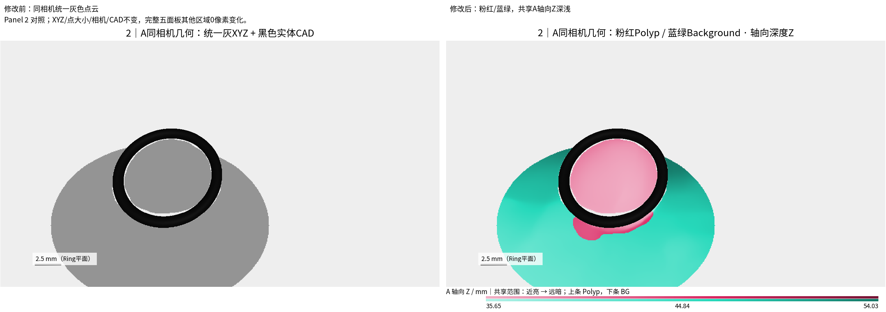
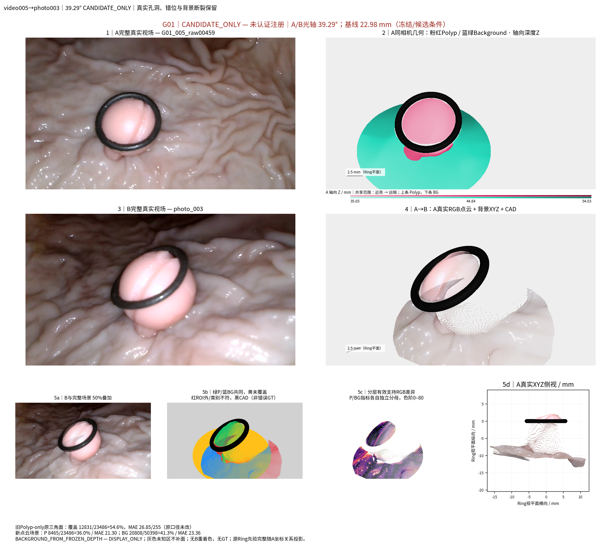
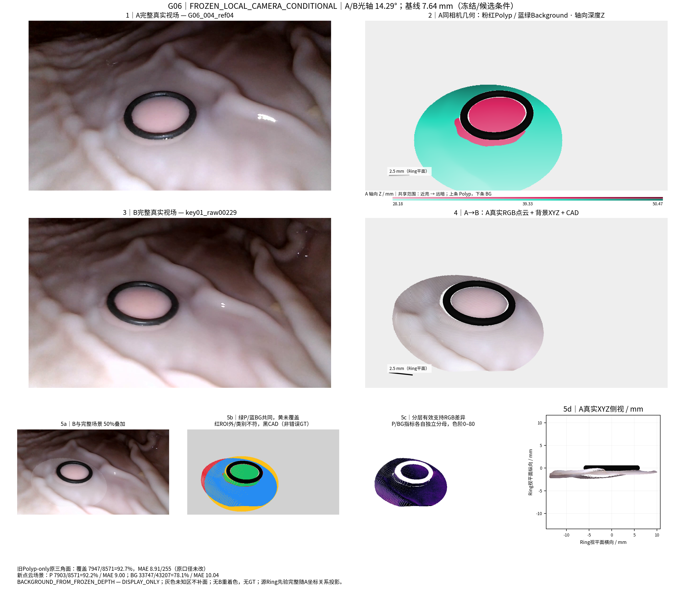

figures/Fig2_Panel2_before_after.png

仅颜色和必要图例变更。近亮、远暗，两层共用每个A场景Z范围；黑色CAD不变。其余面板逐像素保持原图。无重建/配准/深度预测或评价重跑。



39.29° | CANDIDATE_PHOTO_K490_NOT_REGISTERED；A轴向Z 35.6454–54.0253 mm；P/BG点数 12775/37751；其他区域变化0像素。原图 | 新版实际几何绘制

22.60° | CANDIDATE_NOT_REGISTERED_NOT_FUSED；A轴向Z 34.7907–61.8958 mm；P/BG点数 14029/39785；其他区域变化0像素。原图 | 新版实际几何绘制

24.03° | FROZEN_LOCAL_CAMERA_CONDITIONAL；A轴向Z 35.7712–62.9772 mm；P/BG点数 13010/36812；其他区域变化0像素。原图 | 新版实际几何绘制

21.17° | FROZEN_LOCAL_CAMERA_CONDITIONAL；A轴向Z 25.9037–59.8923 mm；P/BG点数 24343/58623；其他区域变化0像素。原图 | 新版实际几何绘制

14.52° | FROZEN_LOCAL_CAMERA_CONDITIONAL；A轴向Z 29.2214–46.1444 mm；P/BG点数 19813/49317；其他区域变化0像素。原图 | 新版实际几何绘制

14.29° | FROZEN_LOCAL_CAMERA_CONDITIONAL；A轴向Z 28.1801–50.4750 mm；P/BG点数 9282/41928；其他区域变化0像素。原图 | 新版实际几何绘制

16.94° | FROZEN_LOCAL_TARGET_UNSCREENED；A轴向Z 28.1801–50.4750 mm；P/BG点数 9282/41928；其他区域变化0像素。原图 | 新版实际几何绘制

12.79° | FROZEN_LOCAL_TARGET_UNSCREENED；A轴向Z 30.1228–60.6127 mm；P/BG点数 19631/74212；其他区域变化0像素。原图 | 新版实际几何绘制

2.87° | UNQUALIFIED_CAMERA_STRESS；A轴向Z 23.9788–38.2710 mm；P/BG点数 19784/65219；其他区域变化0像素。原图 | 新版实际几何绘制

0.65° | NORMAL_CONDITIONAL；A轴向Z 35.6454–54.0253 mm；P/BG点数 12775/37751；其他区域变化0像素。原图 | 新版实际几何绘制

23.25° | CANDIDATE_NOT_REGISTERED_NOT_FUSED；A轴向Z 35.6454–54.0253 mm；P/BG点数 12775/37751；其他区域变化0像素。原图 | 新版实际几何绘制